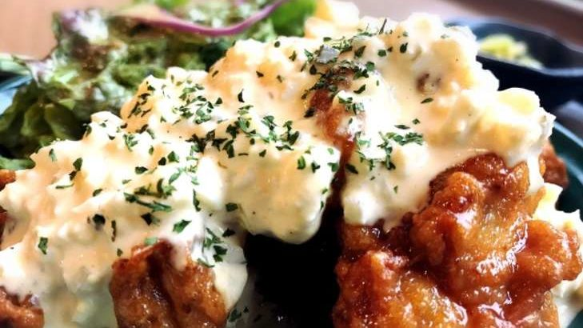
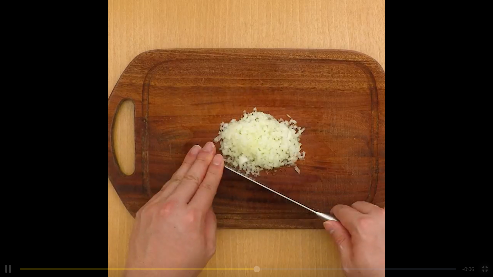
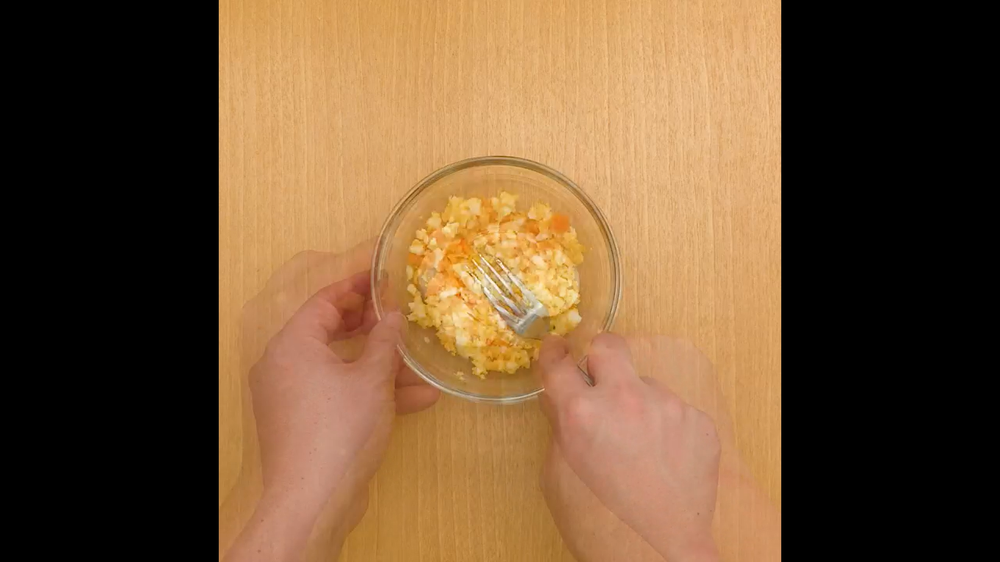
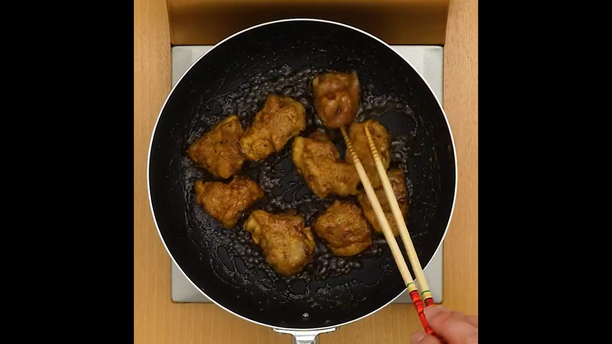

Chiken Nanban
Author of the Recipe
Country of the Recipe
Inspired by Portuguese cuisine, Chicken Nanban is crispy chicken dressed with a tangy sauce and served with homemade tartar sauce. It’s fusion cuisine at its finest and one of J apan’s most popular ways to enjoy fried chicken. light crispy egg batter shell, marinated in a sweet and tangy sauce, Chicken Nanban is an irresistably delicious Japanese fried chicken
For How Many People
2 PeoplePreparation Time
10 MinutesCooking Time
20 MinutesIngredients
Nutrition Facts
vitamin..
Cooking Tip
Follow the recipe and you will have delicious rice!
Fun Fact
the lemon liquid is really important for the chicken
Cooking Tip
Chicken Namban is usually fried by oil, this time use small amount oil
Step-By Step Recipe
1. This is a step for recipe
2. This is a step for recipe
3. This is a step for recipe
4. This is a step for recipe
